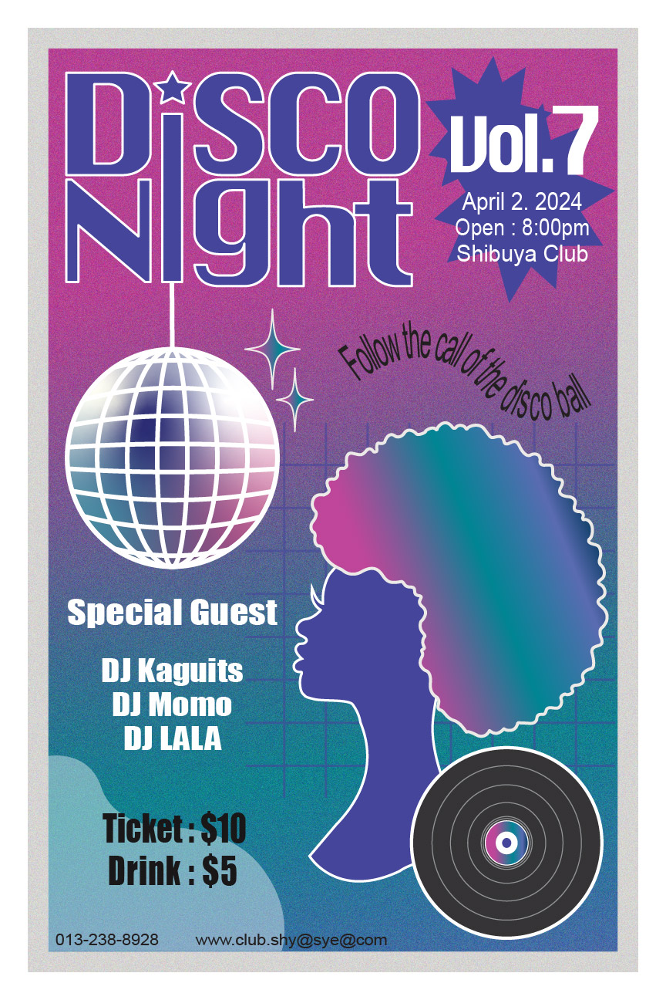

Sakura Tanikawa
Arizona State University
Graphic Information Technology
(Bachelor of Science)
2022 - 2026
Welcome to my resume
I'm looking for internships/positions in:
- UI/UX Design
- Web Design
- Front-end web development
- Graphic Design
- Japanese Tutoring
About Me
I am an international student from Japan, currently a junior majoring in Graphic Information Technology with a focus on Front-End Web Development and Interaction Design. I'm seeking internship opportunities to expand skills and gain practical experience in these fields:
-
UI/UX Design
Gained expertise in user-friendly interfaces, research, and accessibility. Earned a certificate in Foundations of UX Design, enhancing my knowledge of UI/UX principles and workflows.

-
Web Design/Development
Skilled in using Figma, Adobe InDesign, and basic front-end coding with HTML and CSS, with a strong enthusiasm for learning and growth.
-
Graphic Design
Skilled in Adobe Photoshop, Illustrator, and InDesign for creating posters, menus, ads, and business cards.
 -
Japanese Tutoring
Dedicated Japanese tutor with three years of experience teaching over 145 students, skilled in communication and motivational techniques. Seeking a role as a Japanese educator.
Who I am
From a young age, I have embraced various challenges and pursued them with determination. I began dancing at age 4 and enthusiastically participated in dance battles, culminating in a top 4 finish at a world competition. During middle school, I served as both vice president and president of the student council, demonstrating strong leadership abilities. In high school, I participated in a year-long exchange program abroad, where I developed English language skills and cross-cultural adaptability. Additionally, I studied nail art for two years in Japan before attending ASU, earning multiple certifications in the field. I am always open to new challenges and have a strong commitment to seeing tasks through to completion.
Skill
Software skill
-
Adobe Illustrator
-
Adobe Photoshop
-
Adobe InDesign
-
Figma
Technical skill
HTML
CSS
Language Skill
Japanese
English
Work Experience
-
Japanese Tutor
(January 2021 - Current)
-
Total lessons taught: 3,272
-
Total students taught: 149
-
Average review rating: 5/5
-
Total reviews: 24
-
Total number of student nationalities: 20
Click here to view my profile on Preply
Certification
- Google certified Foundations of User Experience (UX) Design
- IELTs - overall score 7.0
- JNA Authorized Nail Salon Hygienic Manager Qualification
- JNA Authorized Nail Salon Technician (grade 2 and 3)
- JNA Gel Nail Examination Licensing (Beginner)
- Abacus certificate examination - grade 1